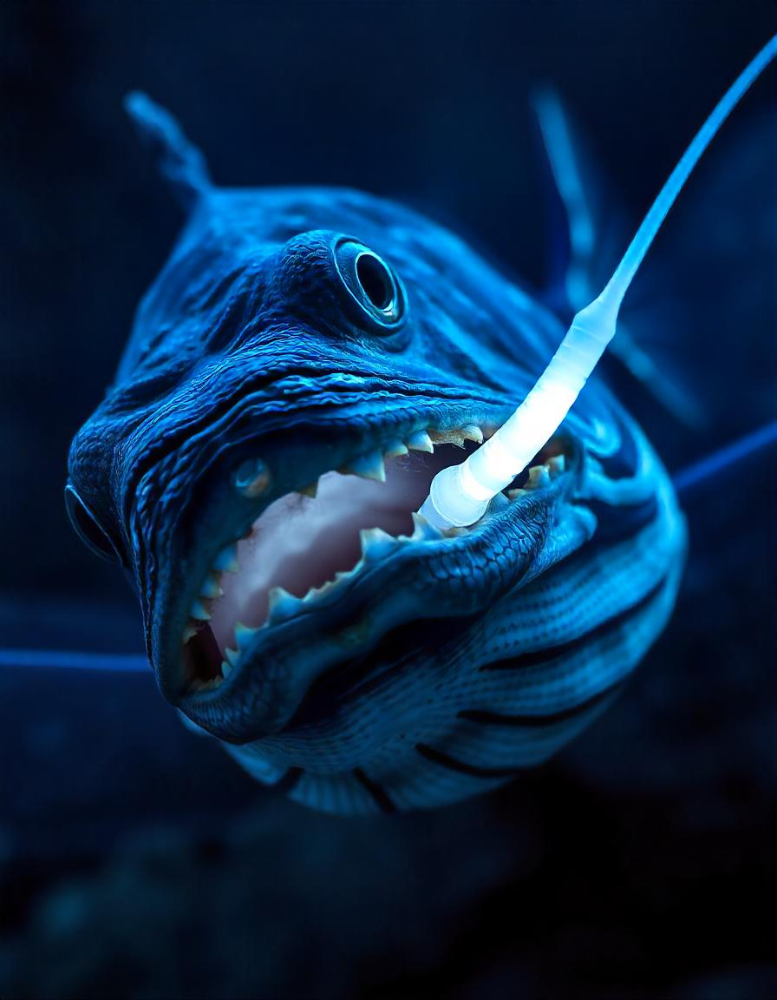

The Unseen World of the Midnight Zone
In the black expanse below 1,000 meters lies the Midnight Zone (or bathypelagic zone), a realm where sunlight never reaches and temperatures hover just above freezing. This is the setting for our story, centered on a creature known only as "The Navigator". The Navigator wasn't an animal, but a massive current, a conveyor belt of cold water that linked the Arctic to the Antarctic, charting a course that spanned millennia. Its mission, unbeknownst to the surface world, was to distribute the planet's lifeblood (oxygen and nutrients) to the farthest reaches of the globe.
Its existence was silent, marked only by the shifting salinity and pressure that deep-sea dwellers recognized as absolute truth. For eons, it flowed uninterrupted, guiding migrations of unseen fish and providing the stable environment necessary for bioluminescent life to flourish. But the currents were changing. Subtle disturbances (a fraction of a degree warmer here, a trace element less there) signaled an era of instability. The Navigator, a passive force, was now fighting a battle against forces originating far above, near the very air-water interface it had always ignored.
The story follows a small collective of vent crabs that relied on The Navigator's path to locate thermal vents. As the currents began to falter and shift erratically, the crabs undertook a perilous journey to the surface boundary, a place of mythical light and noise, to understand the origin of the disturbance and, perhaps, to send a message back to the core of the current. This adventure tests the limits of deep-sea survival and reveals a symbiotic link between the unseen depths and the familiar surface.